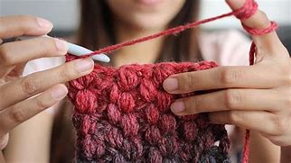
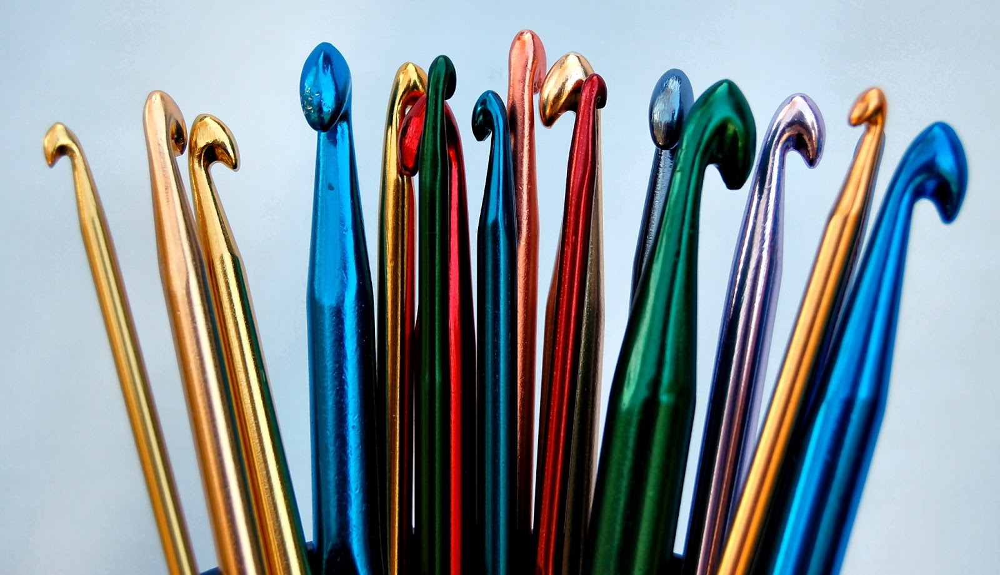
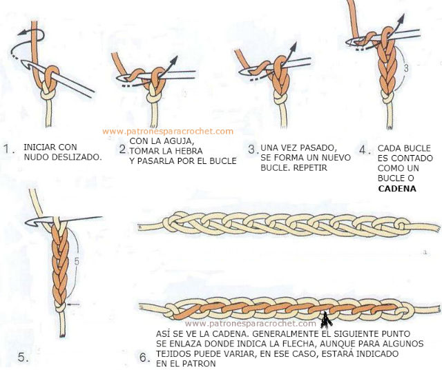

APRENDE A TEJER CROCHET BASICO PASO A PASO
INTRODUCCION
El crochet es una técnica de tejido a mano que utiliza un ganchillo o gancho para crear estructuras entrelazadas con hilos, lanas o filamentos especiales. En esta pagina tu podras aprender lo basico de el tejido a crochet, de modo que despues de haber aprendido lo basico, podras hacer varias ideas creativas y seguir tutoriales para crearlas .

¿QUE ES EL CROCHET?
El ganchillo, croché o tejido de gancho es una técnica para tejer labores con hilo o lana que utiliza una aguja corta y específica, «aguja de ganchillo» o «aguja de croché» de metal, plástico o madera.
- Orígenes y Significado:
- La palabra “crochet” proviene del germánico “croc” y del francés antiguo “crochet”, ambos significando “gancho”.
- Esta técnica ha sido utilizada durante siglos para crear prendas de vestir, accesorios y objetos decorativos.
- Herramientas y Materiales:
- Para practicar el crochet, necesitas un ganchillo. Los ganchillos vienen en diferentes tamaños y grosores según el tipo de hilo o lana que utilices.
- También necesitarás hilos o lanas. Puedes elegir entre hilos finos hasta estambres más gruesos, según tus preferencias y proyectos.
- Puntos Básicos:
- Cadeneta: Es la base de muchos proyectos y se crea al hacer una serie de nudos con el ganchillo.
- Punto bajo: Es un punto sencillo que se utiliza para crear tejidos más densos.
- Punto alto: Es más alto y se utiliza para crear tejidos más abiertos y decorativos.
¿COMO AGARRAR UN GANCHILLO EN EL CROCHET?
- Agarre de lápiz (o estilo continental): Sujeta el ganchillo como si estuvieras sosteniendo un lápiz. El ganchillo descansa en la base del pulgar y se desliza entre el índice y el dedo medio. Este método es popular en Europa y se considera más rápido para tejer.
- Agarre de cuchara (o estilo americano): Sujeta el ganchillo como si estuvieras sosteniendo una cuchara. El ganchillo descansa en la base del pulgar y se desliza entre el índice y el dedo medio. Este método es común en Estados Unidos.
- Agarre de puño (o estilo ruso): Sujeta el ganchillo con el puño cerrado, como si estuvieras sosteniendo un martillo. El ganchillo se desliza entre el índice y el dedo medio. Este método proporciona un buen control y es ideal para proyectos más grandes.
- Agarre de gancho (o estilo tunecino): Sujeta el ganchillo como si estuvieras sosteniendo un gancho. El ganchillo descansa en la base del pulgar y se desliza entre el índice y el dedo medio. Este método se utiliza en el crochet tunecino.
TIPOS DE GANCHOS Y SUS DIFERENCIAS EN EL CROCHET
El crochet es una técnica de tejido que utiliza un gancho con el fin de crear diversos tipos de prendas y accesorios. Sin embargo, no todos los ganchos de crochet son iguales. Cada tipo de gancho tiene sus propias características y se utiliza para diferentes propósitos. A continuación, exploraremos los diferentes tipos de ganchos de crochet y cómo usarlos adecuadamente:
- Ganchos de crochet de acero: Estos ganchos son delgados y afilados, y generalmente se utilizan para tejer hilos finos como el hilo de algodón o el hilo de seda. Son perfectos para proyectos que requieren detalles finos, como encajes y bordados. Los tamaños de estos ganchos van desde 1.00 mm hasta 3.50 mm.
- Ganchos de crochet de aluminio: Los ganchos de aluminio son los más comunes y se utilizan ampliamente. Son ligeros, duraderos y vienen en diferentes colores para facilitar la identificación del tamaño. Estos ganchos son ideales para tejer hilos más gruesos, como el hilo de lana. Vienen en una amplia gama de tamaños, desde 2.00 mm hasta 10.00 mm.
- Ganchos de crochet ergonómicos: Diseñados para brindar comodidad y reducir la fatiga al tejer durante largos periodos de tiempo, estos ganchos tienen mangos de goma suave o de silicona que se adaptan a la forma de la mano. Son ideales para personas que sufren de artritis o problemas en las articulaciones. Vienen en diferentes tamaños y materiales.
- Ganchos de crochet de madera: Si prefieres una sensación cálida y natural al tejer, los ganchos de madera son ideales. La madera proporciona un agarre cómodo y ayuda a evitar que los puntos se resbalen. Estos ganchos son más adecuados para proyectos con hilos más gruesos y vienen en diferentes tamaños.
- Ganchos de crochet intercambiables: Esta opción versátil permite cambiar los ganchos según la necesidad del proyecto. Suelen tener mangos intercambiables y diferentes cabezas de gancho para adaptarse a diferentes grosores de hilo. Son ideales si te gusta tejer diferentes tipos de proyectos sin tener que comprar muchos ganchos individuales.
- ¿Cómo elegir el gancho de crochet correcto?: Al seleccionar un gancho de crochet, considera el tipo de hilo que vas a utilizar y el patrón de tu proyecto. Si vas a tejer hilos más finos, como el hilo de algodón, es mejor optar por ganchos de acero. Si vas a tejer hilos más gruesos, los ganchos de aluminio son una elección segura. Si tienes problemas en las manos, los ganchos ergonómicos pueden ser una gran opción para ti. Además, recuerda que cada gancho tiene un tamaño específico que se indica en milímetros. Este tamaño afectará el tamaño final de tus puntos, por lo que debes seguir las indicaciones del patrón y realizar una muestra de prueba antes de comenzar tu proyecto

CADENETA
La cadeneta (también conocida como punto cadena) es el punto básico del crochet. Es fundamental para comenzar tus proyectos de ganchillo. Aunque no siempre es el más utilizado en todo el trabajo, sí constituye la base principal para la mayoría de los proyectos.
- Sujeta la aguja frente a ti.Sujeta la aguja con la lazada frente a ti.
- Jala la lana hacia arriba y sobre la aguja.
- Agarra la lana con la aguja.
- Jala la lana a través de la lazada.
- Repite hasta que tengas tantas cadenetas como quieras

MEDIO PUNTO O PUNTO BAJO
El punto bajo es uno de los puntos básicos en crochet y se abrevia comúnmente como pb en patrones y tutoriales.El punto bajo en el crochet es un punto fundamental y versátil.
- Introduce el ganchillo en el bucle: Elige el bucle según el patrón que desees tejer.
- Haz una lazada: Sujeta la lana con el ganchillo hacia adelante.
- Jala la lana: Pasa la lana a través del bucle hacia adelante.
- Vuelve a hacer una lazada.
- Jala la lana.
- Repite el proceso.

MEDIO PUNTO ALTO O MEDIA VARETA
El medio punto alto (también conocido como media vareta) es otro punto básico en el tejido a ganchillo. Es un poco más alto que el punto bajo y la mitad del tamaño del punto alto.
- Comienza tejiendo 2 cadenas adicionales a las cadenas de base que ya tienes. Estas cadenas adicionales son para tomar altura y no se contarán como puntos.
- Localiza la tercera cadena desde donde tienes insertada la aguja. Esta tercera cadena es en realidad la última que tejiste, ya que acabas de hacer dos cadenas adicionales para la altura.
- Antes de introducir la aguja en la mitad de la cadena, haz una lazada con la hebra pasando por debajo de la aguja.
- Inserta el ganchillo en la tercera cadena y atraviesa la cadena. Ahora tendrás tres hebras o aritos sobre la aguja
- Engancha la hebra con la que estás tejiendo sobre el ganchillo y devuélvete trayendo hacia ti el ganchillo. Tendrás tres aritos sobre la aguja. Toma otra lazada y atraviesa esos tres aritos
- Repite lo mismo en cada una de las cadenas base que tienes. Para lograr un tamaño uniforme, controla la tensión al tejer y no aprietes demasiado el hilo.

PUNTO ALTO O VARETA
El punto vareta (también conocido como punto alto en crochet) es una puntada fundamental en el arte del crochet.
- Para trabajar un punto alto en cadenas, comienza enrollando la lana alrededor del ganchillo (yrh) y luego en la 4.ª cadeneta desde el ganchillo (la 3.ª cadena que saltas formará la cadena de giro que te dará la altura de los puntos altos).
- Envuelve el hilo alrededor del ganchillo y tira del hilo a través de la cadena solamente.
- Ahora tendrás 3 bucles en el gancho. Nuevamente, pasa el hilo a través de solo los primeros 2 bucles en el gancho
- Ahora tendrás 2 bucles en el gancho. Nuevamente, pasa el hilo a través de los bucles restantes en el gancho.
- ¡Y así es como se hace un Punto Vareta o Punto Alto! Repite todos los pasos anteriores en cada cadena hasta el final

PUNTO ALTO DOBLE O DOBLE VARETA
El punto alto doble o (también conocido como doble vareta o treble crochet en inglés) es uno de los puntos más utilizados en el crochet cuando se busca mayor cobertura. Su altura permite tejer prendas más rápidamente.
- Comienza tejiendo 3 cadenas adicionales a las cadenas de base que ya tienes. Estas cadenas adicionales son necesarias para tomar la altura adecuada.
- Toma la lazada dos veces y atraviesa la aguja en la CUARTA cadena.
- Engancha la hebra con la que estás tejiendo sobre el gancho y devuélvete, trayendo hacia ti el ganchillo. Ahora tendrás cuatro hebras o aritos sobre la aguja.
- Toma lazada y atraviesa dos de esos cuatro aritos. Deben quedar tres aritos sobre la aguja.
- Toma lazada nuevamente y atraviesa los dos aritos restantes.
- Vuelve a tomar lazada y atraviesa los dos aritos restantes.
- Repite los pasos anteriores en cada una de las cadenas base que tengas. Te recomiendo tener una base de 15 o 20 cadenas para practicar el punto. Asegúrate de mantener la misma cantidad de puntos para que el tejido quede del mismo tamaño.

Concluyendo los pasos para tejer las puntadas basicas ahora si podras ver los videso en youtube y tutoriales a crochet en internet para poder aprender a tejer ideas creativas como bolsas, lapiceras, amigurumis, ropa, etc. A continuacion te dejaremos un video tutorial de los puntos que se acaban de explicar para que puedas entender mejor cada paso.
Formulario de Contacto